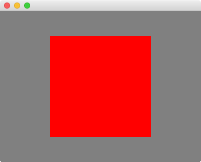

openfl create project HelloWorld
Hello World
Phew, that was quite a lot of background information. It’s time we finally get our hands dirty! And what better way to do that than a classical "Hello World" program. This manual wouldn’t be complete without one, right?
Checklist
Here’s a quick summary of the preparations you should already have made:
-
Chosen and downloaded an IDE.
-
Downloaded the latest version of Haxe.
-
Downloaded the latest version of OpenFL.
-
Downloaded the latest version of Starling.
Configuring the IDE and setting up a new project may be done slightly differently in each IDE. However, you can often create a new project on the command line, and many IDEs will offer a way to import it automatically.
Startup Code
Create a new project or module in your IDE; I recommend you start with the name "Hello World". As part of the initialization process, a minimal startup class is created. Let’s open it up and modify it as shown below. (Typically, that class is named like your project, so exchange the class name below with the correct one.)
import openfl.display.Sprite;
import starling.core.Starling;
class HelloWorld extends Sprite
{
private var _starling:Starling;
public function new()
{
super();
_starling = new Starling(Game, stage);
_starling.start();
}
}This code creates a Starling instance and starts it right away.
Note that we pass a reference to the Game class into the Starling constructor.
Starling will instantiate that class once it is ready.
(It’s done that way so you don’t have to take care about doing stuff in the right order.)
That class first needs to be written, of course.
Add a new class called Game to your project and add the following code:
import starling.display.Quad;
import starling.display.Sprite;
import starling.utils.Color;
class Game extends Sprite
{
public function new()
{
super();
var quad:Quad = new Quad(200, 200, Color.RED);
quad.x = 100;
quad.y = 50;
addChild(quad);
}
}The class just displays a simple red quad to see if we’ve set up everything correctly.
Note that the Game class extends starling.display.Sprite, not openfl.display.Sprite!
This is crucial, because we’re in the Starling world now.
It’s completely separate from the openfl.display package.
|
First Launch
Now let’s compile and run the project. Your IDE may offer its own method of building and launching, or you can run the following on the command line:
lime test html5
Congratulations! You have successfully compiled and run your first Starling based project.

Figure 1. Fantastic: a red Starling in a red box.
Seriously: the most daunting part now lies behind you. Finally, we are ready to dig into a real project!